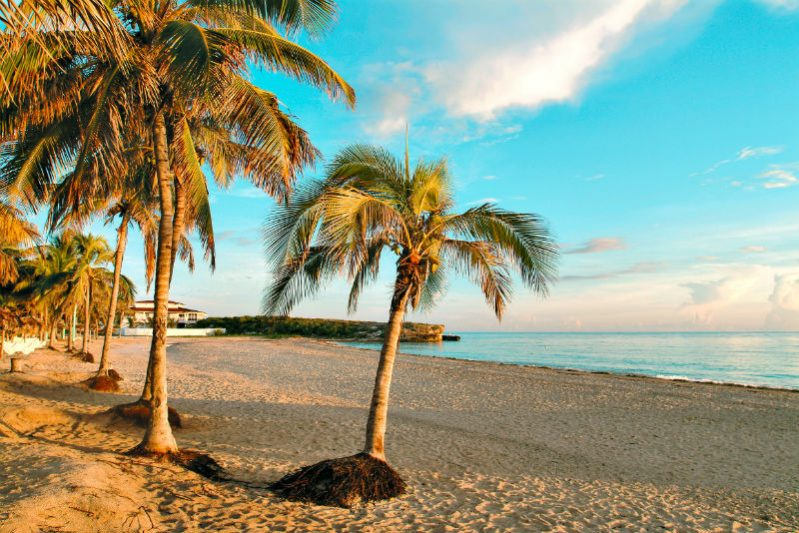

Kuba - šareno ostrvo na kojem je vreme stalo

Da li ste oduvek maštali o putovanju kroz vreme i čekali da se vremeplov pojavi u prodaji? Za povratak na Kubu 50-ih godina vremeplov vam nije potreban. Dođite kod nas i mi ćemo taj san pretvoriti u stvarnost. Zamislite beli pesak, palme, kristalno more, gradić zaspao u vremenu sa šarenim ulicama i nasmejanim ljudima koji plešu salsu gde god stignu. Okusite čarobni život kubanaca.
Kuba je mesto tradicionalne kolonijalne arhitekture, mesto gde se duh nekih starijih vremena prepliće sa sadašnjošću čineći je izuzetno zanimljivom destinacijom. Ulice načičkane starim automobilima i građevinama stvaraju jedinstvenu atmosferu i vraćaju vas kroz prošlost. Probudite znatiželju u sebi i zaintrigirajte svoja čula. Kuba će vam pružiti jedno neverovatno iskustvo koje niste do sada doživeli.
Ostrvo ruma, cigara, muzike i plesa idealno je mesto za strastvene plesače, hedoniste, zaljubljenike u egzotičnu prirodu i razigrane i gostoljubive ljude. Naše putnike vodimo u obilazak Havane, velelepne prestonice i Varadera gde se nalaze najlepše plaže na Kubi. Ako ste željni opuštanja i odmora tu su prelepe netaknute plaže i tirkizno more. Ako pak želite aktivan odmor tu su brojne uzbudljive aktivnosti poput ronjenja, odbojke na plaži, pedaline, škole plesa, istraživanje Kubanske savane, vožnja katamaranima oko ostrva i plivanje sa delfinima. Za one hrabre preporučujemo etno park Guama, gde se možete susresti sa krokodilima. Za one koji vole uzbudljiv i raznolik noćni život Kuba nije štedela. Ona obiluje luksuznim hotelima, živopisnim kafeima i barovima u kojima možete piti čuveni mohito i u kojima muzika i ples ne staju.
Ovakvu ponudu ćete teško odbiti. Mi želimo da doživite Kubu na pravi način i zbog toga imate mogućnost da sami skrojite sopstveni aranžman prema svojim željama I budžetu uz maksimalnu uštedu vremena.
Otputujte na Kubu sa nama već od 1 282 € po osobi sa svim taksama.
